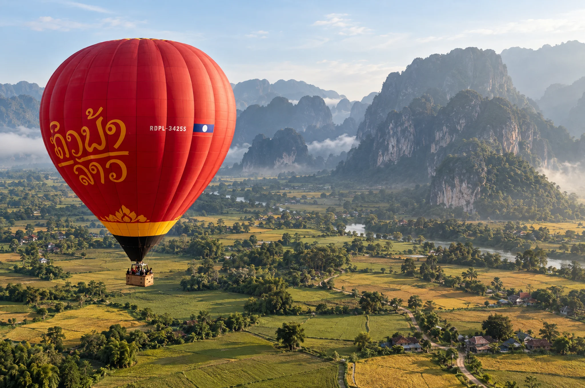
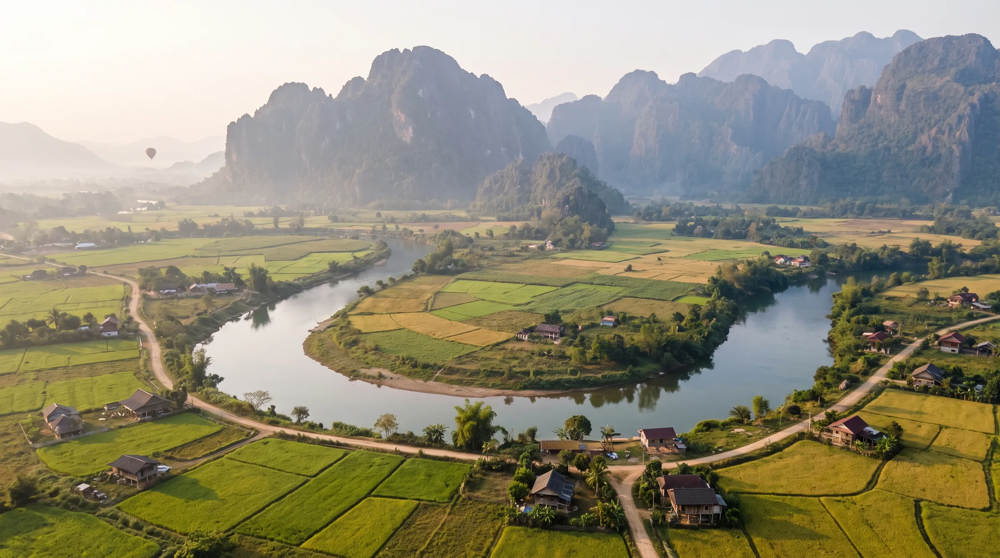
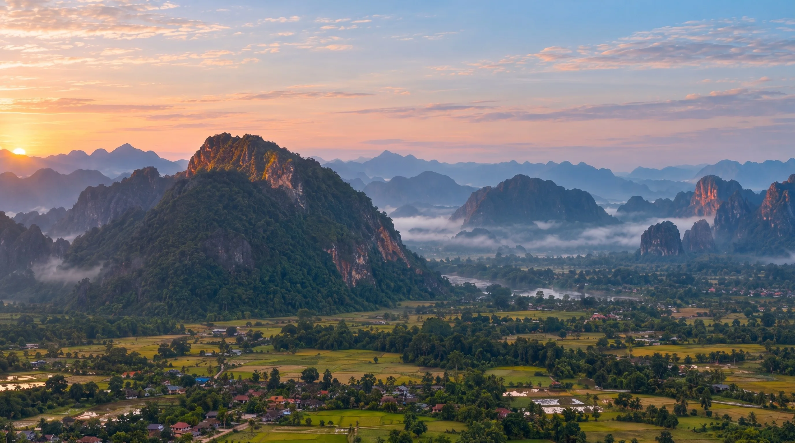

Mongolfiere in Vang Vieng
Voli in mongolfiera per vedere il Laos dall'alto.
18°55' N
102°27' E

Come inizia
Pick-up, briefing, decollo.
Si parte prima dell’alba dal centro di Vang Vieng. Una volta raggiunto il punto di partenza, l’equipaggio prepara la mongolfiera e spiega le indicazioni di sicurezza prima del decollo.
Il volo dura in media 45–60 minuti, in base al vento e alle condizioni meteo.
Due cieli. Scegline uno.
Stessa valle, stessa mongolfiera. Una luce diversa, un silenzio diverso.
05:30
Il volo
I voli dipendono dal meteo. Se il vento dice di no, voliamo un’altra mattina, oppure ti rimborsiamo per intero.
- Durata
- 45–60 minin volo
- Partenze
- Alba / Tramontopartenze ogni giorno
- Trasferimento
- Transfer dall’hotelincluso
- A bordo
- Piccoli gruppiper ogni volo
Dove decide il vento.
Nessun volo segue la stessa linea. Partiamo dai campi a ovest del fiume e lasciamo che l’aria del mattino scelga la direzione: quasi sempre verso nord, lungo il Nam Song, sopra i picchi.
- Campo di decollo
- Rotta tipica
- Nam Song
Chi siamo
Volare con la valle.
Siamo un piccolo team con base a Vang Vieng. Voliamo in questa valle ogni stagione, e preferiamo rinunciare a una mattina piuttosto che forzarla.

-
Piloti esperti
Con licenza, e abituati a questi venti. Quasi tutti hanno alle spalle centinaia di mattine qui.
-
Partenze in base al meteo
Ogni volo viene confermato la sera prima, e di nuovo al campo.
-
Briefing completo prima del volo
Come stare nel cesto, dove tenersi, cosa succede all’atterraggio. Dieci minuti tranquilli prima di partire.
